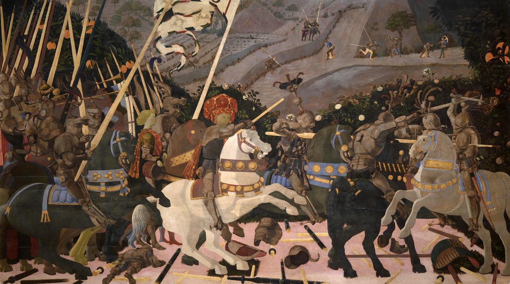
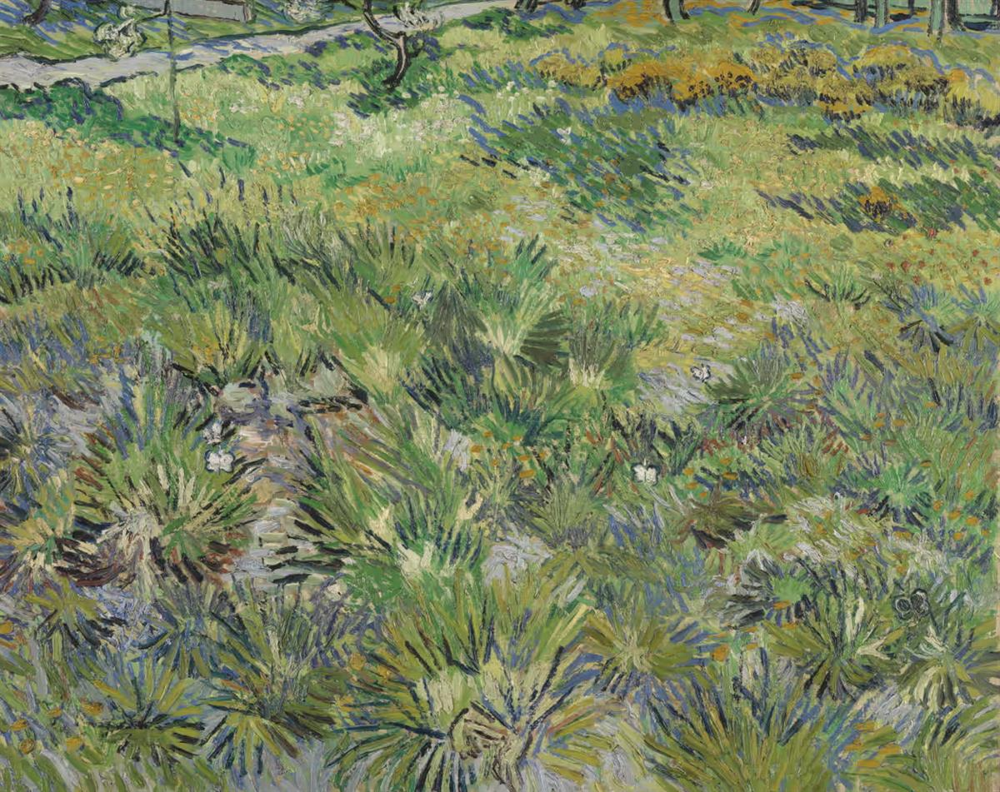

Maurizio Cattelan’s Comedian, which sold at a New York auction last year for $6.2 million, was chosen for inclusion by Damien Hirst. Photograph: Rhona Wise/EPA
ON SOURCE: THE OBSERVER
Vanessa Thorpe Arts and media correspondent
Sat 11 Jan 2025 17.03 GMT
‘It is everything art gets a bad name for and everything I love’: Damien Hirst and Cornelia Parker on choosing artworks for schools
Antony Gormley and Bridget Riley also pick works to be shown on high-res displays, thanks to a drive to put art at the core of the secondary school cultural syllabus
A scheme to bring powerful works of art into the classroom is to be rolled out across British secondary schools in the coming year, with the aim of reaching a million students daily in 1,000 schools by 2027.
Works by Van Gogh, Matisse, Blake and Georgia O’Keeffe, each selected by leading names in contemporary art, including Damien Hirst, Bridget Riley, Cornelia Parker and Antony Gormley, are to be at the centre of a drive for improved visual arts education.
Hirst, who has chosen the provocative “banana on the wall” 2019 work Comedian, by Maurizio Cattelan, as well as William Blake’s disturbing The Ghost of a Flea, has explained that he was drawn to the “stupidity” of Cattelan’s concept.
“It is everything art gets a bad name for and everything I love about art. It’s perfect and it’s a real banana,” Hirst said this weekend, as the project launched. “So it’s real and not a representation of anything, which means you can trust it, but you can’t. And you have to replace the banana over time, which is obvious and silly. It makes me laugh out loud and it’s serious art.”
The duct-taped fruit sold for $6.2m last November. British teenagers, sadly, will not be confronted with the real banana, but will instead be introduced to all the artworks in the scheme via specially loaned, high-resolution, large television screens.
Art in Schools, now a registered charity, is being expanded following a successful pilot run in three schools in 2023. Its new goal is to put art at the core of the cultural syllabus by giving students close-up exposure to significant works.

Paolo Uccello’s painting of the Battle of San Romano was chosen for inclusion in the project by Cornelia Parker, who credits it for inspiring her own best-known work, Cold Dark Matter: An Exploded View. Photograph: The National Gallery Photograph/The National Gallery, London
Riley, famous for her innovative Op Art since the 1960s, has chosen Vincent Van Gogh’s Long Grass with Butterflies of 1890. She picked it, she has said, because “you don’t see the butterflies at once, but as you look for them, you also see so many different kinds of plants and leaves. It is so surprising what a patch of long grass can reveal.”
Art in Schools aims to address a lack of access to key artworks and will focus initially on areas identified as being affected by cultural neglect and underfunding.
“Our goal is to ensure every student, regardless of location or background, has access to the transformative power of art,” said Winton Rossiter, its founder and chief executive. “We are now able to offer a unique, technology-driven solution of national scale.”
The sculptor Gormley, renowned for his 1998Angel of the North, has selected three other human-made landmarks in his attempt to inspire students. First, The Stones of Stenness in the Orkneys, which date from 3100 to 2900 BC, “because they root us in present-time experience, while connecting us to sky and earth, time and space”.
Gormley has also chosen Wiltshire’s Silbury Hill, which he describes as “an example of collective action to make a thing that is also a space of imaginative freedom”, and the cave-ridden Creswell Crags in the Midlands, formed during the last Ice Age, as “it is the only place in Britain where you can really feel the world of our early hunter-gatherer ancestors and see, in the horses they carved, their love of the greater-than-human world”.
In contrast Parker, who was shortlisted for the Turner Prize in 1997, has made just one selection: Paolo Uccello’s The Battle of San Romano, which she suspects inspired her own best-known work, Cold Dark Matter: An Exploded View, which she created in 1991. This piece notoriously featured the fragments of a garden shed which had been blown up for her by the British Army. “It was an attempt,” she has explained, “to contain the universe after the big bang.”
Parker’s first encounter with Uccello’s battle scene came on a school trip to London. “I loved the fact that it was a very formalised representation. Battles are usually violent affairs, but this one seemed to be highly organised and harmonious.”

Van Gogh’s Long Grass with Butterflies was selected by Bridget Riley. Photograph: The National Gallery, London
This “tapestry-like” work is actually part of triptych split between the Uffizi Gallery in Italy, the Louvre in France and Britain’s National Gallery. Art in Schools screens will now allow pupils to see the restored National Gallery work.
“I made a pilgrimage to see the one in the Louvre and was disappointed I could not see the painting properly, as it was obscured by layers of blackened varnish.
“I know there is a fierce debate about conservation, but in this case I am in awe of the subtle skills that have allowed the painting to be seen it its very best light.”
The charity is also set to create annual art challenges for students inspired by the displayed works, offering prizes and the chance to be featured on the art screens. Praising the expansion of the scheme, the director of the Victoria and Albert Museum East, Gus Casely-Hayford, spoke this weekend of the effect of seeing the National Gallery collection during a course he did in his last year at school.
“For a single session, the deputy director came and spoke to us about Holbein’s The Ambassadors – a painting that tells stories of intrigue, and migration and mystery. It was simply transformative. I knew immediately what I wanted to do.”
Casely-Hayford has chosen the 1533 painting for the scheme.
ON SOURCE: THE OBSERVER